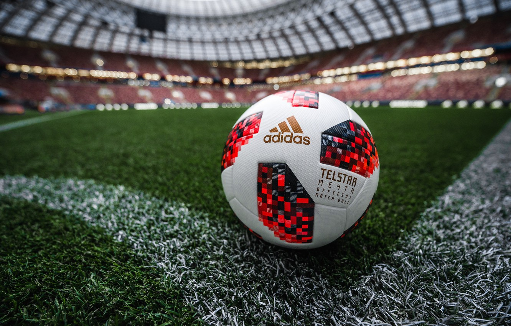

También para despejarme suelo salir a correr, normalmente solo, mientras escucho música. Ahora con el covid-19 ha pasado a ser uno de los deportes
más practicados debido a las circunstancias actuales.
También para despejarme suelo salir a correr, normalmente solo, mientras escucho música. Ahora con el covid-19 ha pasado a ser uno de los deportes
más practicados debido a las circunstancias actuales.La definicion de pádel es: deporte de reglas parecidas a las del tenis que se practica en una pista más pequeña y con paredes en los laterales y el fondo, y con una raqueta de madera y mango corto. Es de los pocos deportes que actualmente permiten practicar por culpa del covid-19.
Es otro de los deportes que me gustaban practicar y es que debido a la situacion actual, es imposible hacerlo al tratarse de un deporte de contacto. En cuanto a su definición: es un deporte que se practica entre dos equipos con el mismo numero de jugadores, dependiendo de las medidas del campo podrá disputarse entre 11 jugadores, 7 jugadores o 5 jugadores. El objetivo de este deporte consiste en introducir un balón en la portería del contrario impulsándolo con los pies, la cabeza o cualquier parte del cuerpo excepto las manos.
Otro de los "deportes" que me gusta hacer en mi tiempo libre es salir con la bici. Normalmente lo suelo hacer acompañado ya sea con amigos o con familiares. Es un gran deporte para despejarte, y además siempre puedes conocer sitios nuevos.
También para despejarme suelo salir a correr, normalmente solo, mientras escucho música. Ahora con el covid-19 ha pasado a ser uno de los deportes
más practicados debido a las circunstancias actuales.
Otras de las cosas que suelo hacer en mi tiempo libre es entretenerme con alguna serie o película. La última serie que he visto ha sido 'Master of Done' La serie fue rodada en New York y su actor principal es Aziz Ansari(Dev)
Por último, en mi tiempo libre también suelo gastarlo jugando a videojuegos, especialmente los de estrategia o 'shooters'